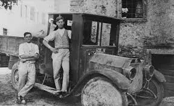
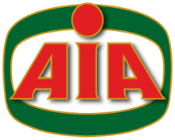
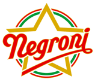

Dal 1959 — Qualità italiana
Un gruppo che unisce passione per la qualità, rispetto per le persone e impegno concreto verso un futuro sostenibile.
Scopri i Report di Sostenibilità
La storia del Gruppo nasce con Apollinare Veronesi, il suo fondatore. Fin da giovane lavora nell’azienda di famiglia, occupandosi del mulino ad acqua del padre e proseguendo una tradizione familiare lunga cinque secoli. La sua spiccata curiosità nei confronti dell’innovazione tecnologica e l’esperienza maturata sul campo rappresentano i due punti fermi sui quali costruirà il percorso imprenditoriale di successo degli anni a venire.
Un giovane Apollinare Veronesi – 1958
Il 1958 è un anno di svolta. Grazie alla visione e alla geniale intuizione del suo fondatore, nasce il Gruppo Veronesi. Nell’Italia del dopoguerra che tornava ad avere la carne in tavola, Apollinare Veronesi costruisce il primo impianto mangimistico a Quinto di Valpantena (VR). Dal 1958, grazie alla sua propensione per l’innovazione e la ricerca continua, l’azienda cresce e si trasforma.
Primo impianto mangimistico Veronesi nel 1958
Il Gruppo si apre al settore dell’allevamento avicolo e della produzione e lavorazione di carni di pollame: viene costituita l’Agricola Italiana Alimentare S.p.A che diventerà famosa in Italia e nel mondo come AIA.
AIA Food, Agricola Italiana Alimentare – Allevamento avicolo AIA
Nel 1985 arrivano le carni suine: il gruppo acquisisce macelli, salumifici e l’azienda Montorsi. In ambito avicolo la crescita continua con l’ingresso di Palladio, Cok, Pavo e Ovomattino.
Accurati controlli su carni suine, introdotte nel Gruppo Veronesi nel 1985
Nel 2002 Il Gruppo Veronesi acquisisce l’azienda Negroni, storico marchio della salumeria d’eccellenza italiana, diventando in pochi anni uno dei player principali del mercato degli affettati.
Qualità, innovazione e responsabilità sociale guidano ogni scelta del Gruppo Veronesi
Dalla produzione di mangimi alla tavola del consumatore, ogni fase è controllata e certificata per garantire la massima qualità.
Scopri di più →Oltre 14.000 collaboratori sono il cuore del gruppo. Investiamo in formazione, welfare e crescita professionale.
Lavora con noi →AIA, Negroni e Veronesi: marchi iconici che incarnano la tradizione gastronomica italiana amata in tutto il mondo.
I nostri brand →Laboratori all'avanguardia e investimento continuo in R&D per prodotti sempre più sicuri, sani e innovativi.
I laboratori →Impegno concreto verso la comunità attraverso iniziative sociali, culturali e di supporto al territorio.
La fondazione →Un impegno strutturato su ambiente, governance e impatto sociale, documentato nei nostri report annuali.
Scarica i report →Tre marchi, un'unica missione: la qualità italiana a tavola


Il Gruppo Veronesi integra la sostenibilità in ogni dimensione del business: dalla gestione della filiera al benessere animale, dalla riduzione dell'impatto ambientale alla creazione di valore per la comunità.
I report sono disponibili in questo repository GitHub e possono essere scaricati liberamente per approfondire la rendicontazione non finanziaria (DNF) e i framework ESG adottati.